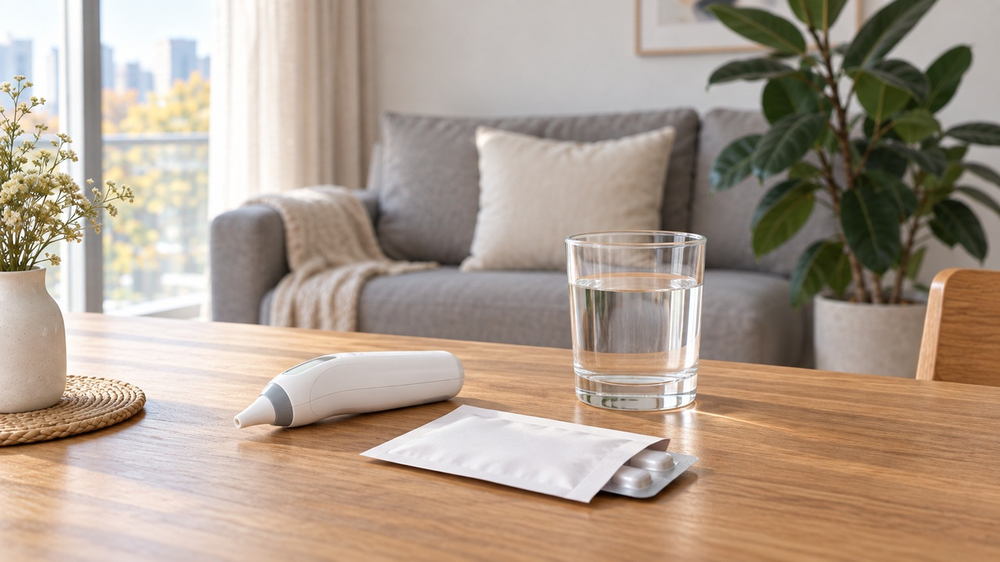

접종 예약 시간은 째깍째깍 다가오는데,
당일 아침 눈을 뜨니 목이 간질간질하고 맑은 콧물이 훌쩍 비칩니다.
'어렵게 시간 내서 발걸음했다가 헛걸음하고 돌아오는 건 아닐까?'
'어제 먹은 감기약 때문에 주사 맞고 더 아파지면 어쩌지?'
문 앞에서 외투를 들었다 놨다 망설이셨을 겁니다.
가벼운 감기나 감기약 복용만으로 독감 접종을 섣불리 미룰 필요는 없습니다.
당일 열의 정도와 몸 상태를 보고 결정하시면 됩니다.
오늘 에디터 혀니가 접종실 문턱 앞에서 고민 중이신 여러분을 위해
안심하고 접종받는 실전 꿀팁을 속 시원하게 풀어드릴게요!
독감 접종 가능 여부를 결정짓는 핵심 판정 기준은
체온 숫자 하나만이 아니라 ‘열의 정도와 전신 상태’입니다.
국가건강정보포털과 미국 보건당국(CDC) 지침에 따르면 열의 유무와 관계없이
가벼운 콧물, 코막힘, 미세한 목 따가움은 접종 일정을 미룰 사유가 아닙니다.
국내에서 일반적으로 접종하는 주사용 인플루엔자 백신은 불활성화 백신이므로,
가벼운 감기가 있다고 해서 백신 바이러스가 체내에서 증식하지는 않거든요.
하지만 열의 정도와 함께 오한, 온몸 두들겨 맞은 듯한 심한 몸살이 있다면
이날은 스스로 끙끙 앓으며 고민하기보다 전문 예진을 받아 일정을 조정하는 것이 좋습니다.
심하게 아픈 상태에서는 기존 감기 증상과 접종 후 반응을 구별하기 어렵고,
몸의 증상 부담도 겹칠 수 있어 말끔히 회복된 후 접종하는 것이 훨씬 안전하기 때문입니다.
이미 며칠 전부터 감기약을 처방받아 드시고 계셨다면
내가 먹고 있는 약 성분을 차분히 확인해 보아야 합니다.
일반적인 종합감기약의 항히스타민제, 진해거담제,
그리고 세균 감염 완화를 위한 항생제 복용 자체는 접종 금기사항이 아닙니다.
다만 항생제가 필요할 정도의 감염을 앓고 있다면 약 자체보다 감염의 중증도를 따져야 하며,
주사를 맞겠다고 처방된 항생제를 임의로 중단해서는 안 됩니다.
또한 인플루엔자 항바이러스제는 백신 종류(생백신 등)에 따라 영향을 줄 수 있으므로
처방 내역을 당일 예진 시 담당 선생님께 반드시 말씀해 주셔야 합니다.
감기 증상 때문에 필요한 해열진통제는 처방이나 제품 안내에 맞춰 편하게 드세요.
주사 맞는다고 아픈 걸 억지로 참거나 약을 끊으실 필요는 전혀 없습니다.
다만 접종 후 열이 날까 봐 겁나서 ‘열이 나기도 전 미리 챙겨 먹는 것’만 안 하시면 됩니다.
이미 감기약을 드셨다면 약 봉투를 예진 때 담당 선생님께 쏙 보여주시면 되고요,
접종 후 실제로 열이나 통증이 나타났을 때 전문가 안내에 따라 챙겨 드시면 충분합니다.
접종 기관에 도착하시면 첫머리에 작성하는 예진표에
최근 앓았던 감기 증상과 먹고 있는 약을 솔직하게 적어주세요.
과거 백신 접종 후 심한 알레르기를 겪은 적이 있다면
이 또한 담당 선생님께 꼭 말씀해 주셔야 훨씬 안전합니다.
주사를 맞은 직후에는 곧바로 귀가하지 마시고
원내에서 안내하는 시간 동안 머물며 몸 상태를 살펴주세요.
귀가 후에도 이상 반응이 있는지 편안히 관찰하시면 됩니다.
드물게 발생할 수 있는 급성 알레르기 반응은 접종 직후뿐 아니라 이후에도 나타날 수 있으므로,
즉각적인 응급 대처가 가능한 원내에서 안정을 취하는 것이 안전합니다.
접종 당일에는 헬스장이나 격한 운동, 뜨끈한 사우나, 술자리는 잠시 미뤄두시고,
집에서 따뜻한 보리차 한잔 마시며 내 몸에 온전한 휴식을 선물해 주세요.
접종 후 1~2일간 주사를 맞은 부위가 뻐근하게 아프거나 붉어지고,
미열이나 가벼운 두통, 근육통이 나타나는 것은 접종 후 흔히 나타날 수 있는 일시적인 반응입니다.
가벼운 감기라면 지레 겁먹고 접종을 미루실 필요 전혀 없습니다.
현재 겪고 있는 증상과 복용 중인 약 봉투만 예진 때 솔직히 보여주세요.
담당 선생님이 당일 컨디션을 꼼꼼하게 살피고 딱 알맞게 접종 타이밍을 도와주시니,
걱정 대신 편안한 마음으로 접종 기관을 찾아 안내를 받아보시길 권해드립니다.
여러분은 올가을 독감 백신 접종을 이미 완료하셨나요,
아니면 컨디션을 살피며 날짜를 조율 중이신가요? 여러분의 경험을 댓글로 편하게 들려주세요 😊
#독감접종 #독감접종감기기운 #독감주사감기약 #독감발열증상기준 #접종당일안전수칙 #독감항생제복용 #에디터혀니 #꿀단지